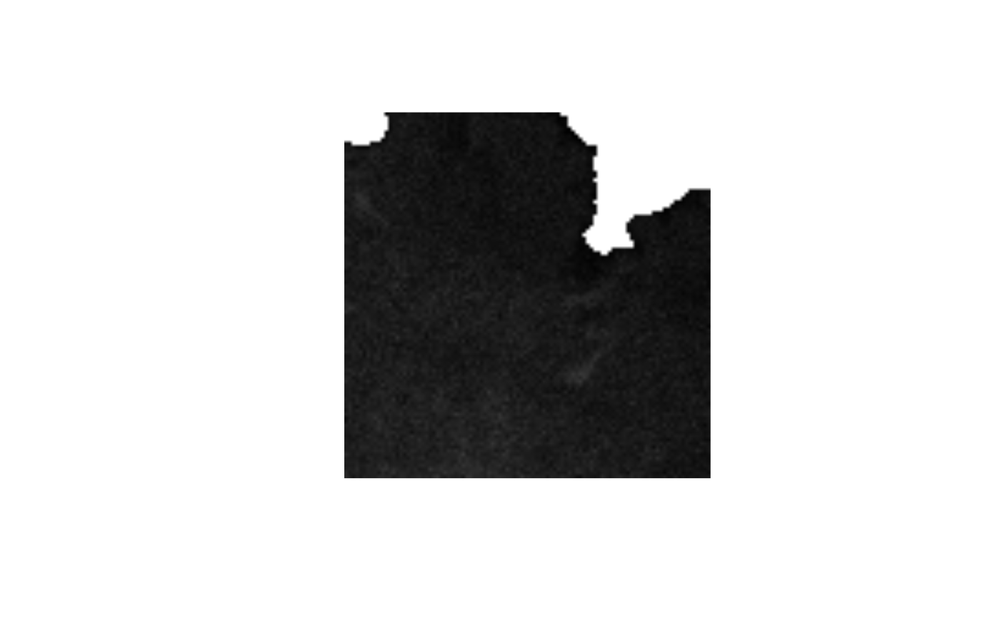
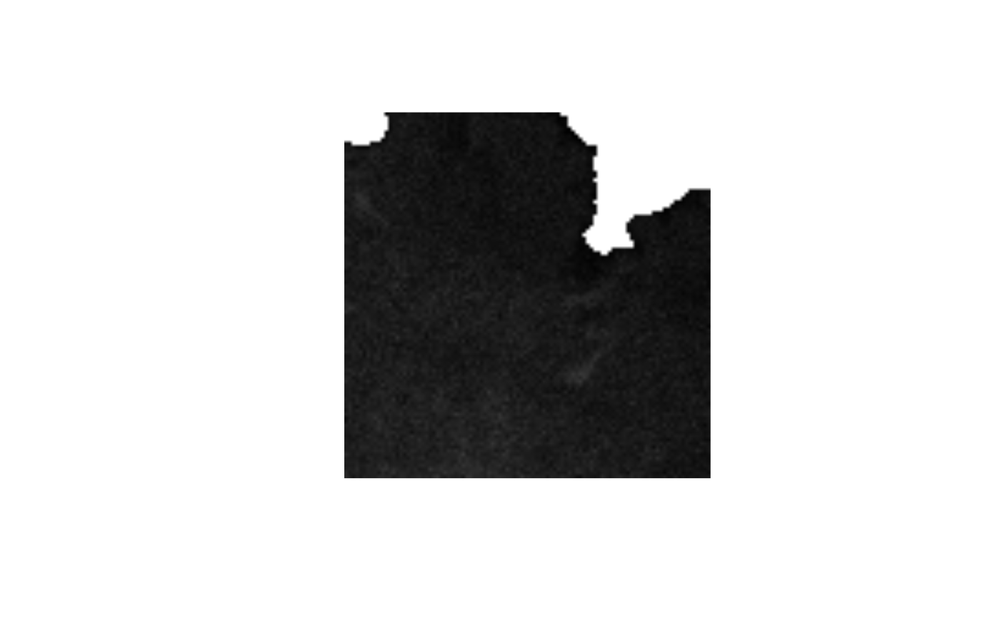

Threshold every image frame in a stack based on their median.
Source:R/stack_thresh.R
med_stack_thresh.RdAn ijtiff_img is a 4-dimensional array indexed by
img[y, x, channel, frame]. For each channel (which consists of a stack of
frames), this function finds a threshold based on all of the frames, then
takes the median of all the frames in the stack image, uses this to create a
mask with the found threshold and then applies this mask to every frame in
the stack (so for a given pillar in the image stack, either all the pixels
therein are thresholded away or all are untouched, where pillar x,y of
channel ch is img[y, x, ch, ]).
med_stack_thresh(
img,
method,
fail = NA,
ignore_black = FALSE,
ignore_white = FALSE,
ignore_na = FALSE
)Arguments
- img
A 3-dimensional array (the image stack, possibly a time-series of images) where the \(n\)th slice is the \(n\)th image in the stack.
- method
The name of the thresholding method you wish to use. The available methods are
"IJDefault","Huang","Huang2","Intermodes","IsoData","Li","MaxEntropy","Mean","MinErrorI","Minimum","Moments","Otsu","Percentile","RenyiEntropy","Shanbhag","Triangle"and"Yen". Partial matching is performed i.e.method = "h"is enough to get you"Huang"andmethod = "in"is enough to get you"Intermodes". To perform manual thresholding (where you set the threshold yourself), supply the threshold here as a number e.g.method = 3(so note that this would not select the third method in the above list of methods). This manual threshold will then be used to threshold the median stack to create a 2D mask and then this mask will be applied to all frames in the stack. If you want a different method for each channel, specify this parameter as a vector or list, one element per channel.- fail
When using
auto_thresh_apply_mask(), to what value do you wish to set the pixels which fail to exceed the threshold?fail = 'saturate'sets them to saturated value (see 'Details').fail = 'zero'sets them to zero. You can also specify directly here a natural number (must be between0and2^32 - 1) to use.- ignore_black
Ignore black pixels/elements (zeros) when performing the thresholding?
- ignore_white
Ignore white pixels when performing the thresholding? If set to
TRUE, the function makes a good guess as to what the white (saturated) value would be (see 'Details').- ignore_na
This should be
TRUEifNAs inint_arrshould be ignored orFALSEif you want the presence ofNAs inint_arrto throw an error.
Value
An object of class stack_threshed_img which is the thresholded
image (an array in the style of an ijtiff_img).
Pillars not exceeding the threshold are set to the fail value (default
NA).
Details
For
ignore_white = TRUE, if the maximum value in the array is one of2^8-1,2^16-1or2^32-1, then those max values are ignored. That's because they're the white values in 8, 16 and 32-bit images respectively (and these are the common image bit sizes to work with). This guesswork has to be done becauseRdoes not know how many bits the image was on disk. This guess is very unlikely to be wrong, and if it is, the consequences are negligible anyway. If you're very concerned, then just specify the white value as an integer in thisignore_whiteargument.If you have set
ignore_black = TRUEand/orignore_white = TRUEbut you are still getting error/warning messages telling you to try them, then your chosen method is not working for the given array, so you should try a different method.For a given array, if all values are less than
2^8, saturated value is2^8 - 1, otherwise, saturated value is2^16 - 1.
Examples
# \donttest{
img <- ijtiff::read_tif(system.file("extdata", "50.tif",
package = "autothresholdr"
))
#> Reading image from /home/runner/work/_temp/Library/autothresholdr/extdata/50.tif
#> Reading an 8-bit, float image with dimensions 100x100x1x50 (y,x,channel,frame) . . .
ijtiff::display(img[, , 1, 1])
img_thresh_mask <- med_stack_thresh(img, "Otsu")
ijtiff::display(img_thresh_mask[, , 1, 1])
 ijtiff::display(img[, , 1, 1])
ijtiff::display(img[, , 1, 1])
 img_thresh_mask <- med_stack_thresh(img, "Triangle")
ijtiff::display(img_thresh_mask[, , 1, 1])

# }
img_thresh_mask <- med_stack_thresh(img, "Triangle")
ijtiff::display(img_thresh_mask[, , 1, 1])

# }